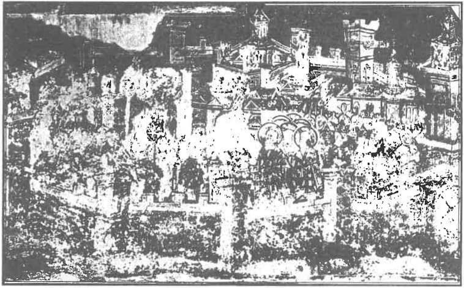
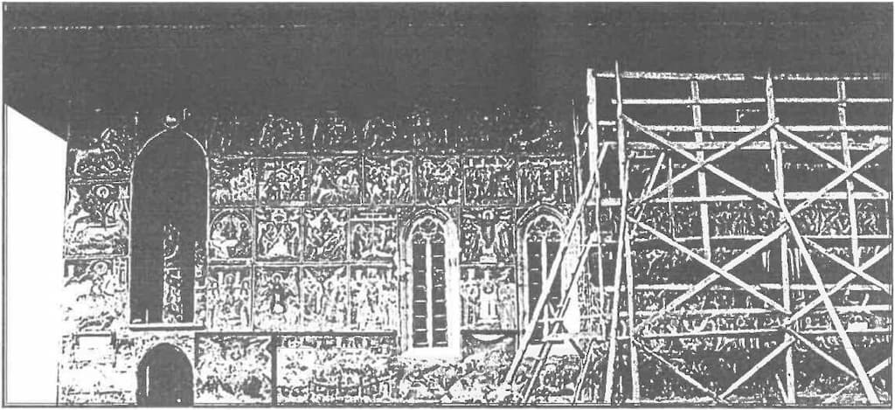
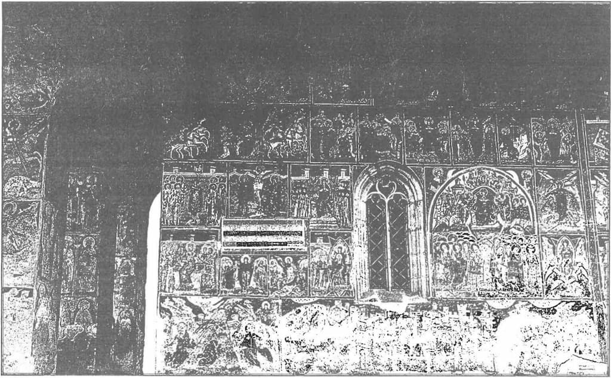

…Dacă pe vreun împărat (țar) îl părăsește înțelepciunea lui militară înnăscută, și va veni la el marea blândețe, aceasta este opera dușmanilor lui: nu se va gândi împăratul la armată, nici la orânduială în împărăția sa, va petrece cu aceia, care-i aprind inima cu vrăjitorie și cu multe piedici ispititoare; și asupra ostașilor săi va aduce multă tristețe, și asupra întregii împărății multe nenorociri mari din partea demnitarilor săi, încât nimic lui nu va fi drag, nici înțelepciunea, nici armata, nici viața împărăției aceea; și care înțelepciuni (treburi) ostășești vor ajunge la dânsul sau chemarea împărătească înțeleaptă, el va începe să le nesocotească.
Așa zice Petre, voievodul românesc: Dacă vrei (să cunoști) înțelepciunea împărătească, să știi despre oștire și despre așezămintele vieții împărătești, atunci să citești până la sfârșit luarea Constantinopolului, să nu cruși pe sine cu nimic, și acolo vei găsi tot ajutorul lui Dumnezeu. Dumnezeu îi ajută nu pe cei leneși, ci pe cei care muncesc și îl cheamă pe Dumnezeu în ajutor, și pe acei ce iubesc dreptatea și judecă cu judecată dreaptă. Dreptatea pentru Dumnezeu este bucuria inimii, iar pentru împărat mare înțelepciune. Am observat, Sire, că Petre, voievodul românesc a fost pentru tine, Sire, și pentru împărăția ta un mare binevoitor. Și eu, Sire, de aceea, auzind acele cuvinte de la el, le-am scris, le-am adus la tine, Sire, slujind la tine, după cum, Sire, îți va place serviciul meu, al robului tău.
Și zice voievodul românesc Petre: au fost Grecii leneși de a apăra tare credința creștină în contra necredincioșilor. Astăzi nevroind apără credința păgână de (ofensivă) invazie, împăratul turcesc ia la 7 ani copiii de la Greci și Sârbi pentru a-i învăța la militărie și îi trece la credința sa; iar ei (Grecii și Sârbii) despărțindu-se de copiii lor, plâng cu mare plâns, dar cu nimic nu se pot ajuta.
Domnului și binecredinciosului marelui țar și marelui cneaz Ivan Vasilievici a toată Rusia se închină robul tău, al țarului, venit din Lituania, Ivașco, fiul lui Simeon Peresvetov. Am adus pentru tine, către suveran, cuvinte din multe regate domnești și de la Petre voievodul românesc, și treburi (lucruri) de-ale tale împărătești. Și acele cuvinte și lucruri, Sire, au fost puse în visteria ta împărătească, iar pe mine, robul tău, pentru acele cuvinte și lucruri ai poruncit, Sire, să fiu bine dăruit. Și acele, Sire, cuvinte și lucruri, până acuma n-au fost în fața ta, a suveranului, căci, Sire, acele cuvinte sunt neplăcute în fața ta, în fața suveranului, iar lucrurile tale sunt la mine, la serviciul meu. Și în acele regate, Sire, mult se mirau și lăudau nașterea împărătească a ta cu semne cerești; și au proslăvit înțelepții filosofii grecești și doctorii latinești, și au spus despre acele cuvinte: se cuvine acelui suveran (milităros), născut înțelept de la Dumnezeu, asemenea cuvinte să le scrie cu aur și să le țină la dânsul mulți ani, și după dânsul asemenea lucruri și slava sa împărătească să le lase altui împărat. Și eu, Sire, am căpătat acele cuvinte în acele regate de la oamenii înțelepți, după cum, Sire, îți va place serviciul meu, al robului tău. Și eu, Sire, am plecat din Lituania, au trecut deja unsprezece ani, slujind la tine, la țarul binecredincios, cu credință, nu mai rău decât ai mei strămoși și străbunici, cum au slujit cu credință suveranilor ruși, marilor cneji, strămoșilor și străbunicilor tăi, Peresvet și Oslabea, în călugărie și schime cu binecuvântarea făcătorului de minuni Serghie în bătălia de pe Don sub marele cneaz Dimitrie Ivanovici pentru credința creștină și pentru sfintele biserici și pentru cinstea suveranului (și) au suferit și și-au pierdut capetele. Și eu, robul tău, am venit la numele tău împărătesc pentru aceasta, să fiu cu totul al tău, Sire, să slujesc cu credință, cât m-a ajuta Dumnezeu.
Despre tine, Sire, despre binecredinciosul marele țar, scriu înțelepți filosofi, că despre tine, despre suveran, va fi în veci slavă mare, ca despre chesarul August și despre țarul Alexandru Machedon, așa și despre tine, Sire, scriu acei înțelepți filosofi, și despre oștirea ta și despre înțelepciunea ta mare. Și aceia încep (seri) în cărțile lor înțelepte, că vei introduce marea dreptate în împărăția ta, și-l vei mângâia pe Dumnezeu cu bucurie sufletească (a inimii). Și așa încep filosofii înțelepți, că asemenea dreptate nu va exista în întregul univers (sub soare), ca în împărăția ta: a suveranului, din cauza înțelepciunii tale mari și a strășniciei tale de suveran: judecătorii vicleni parcă se vor trezi din somn, și se vor ruina de afacerile lor viclene, și se vor mira ei înșiși, că au judecat viclean și adunau (luau mită) necurat au păcătuit mult și de nenumărate rânduri față de Dumnezeu. Așa scriu despre tine, Sire: tu ești suveran groaznic și înțelept; îi vei aduce pe păcătoși la pocăință și vei introduce dreptatea în împărăția ta, și vei aduce lui Dumnezeu bucuria inimii. La August chesarul a venit un ostaș, cu înfățișare modestă, săracă, și i-a adus mari înțelepciuni (lucruri, invenții) ostășești, și el pentru aceasta l-a dăruit și-l ținea pe el și neamul lui aproape de dânsul. Și la împăratul Alexandru, a venit cu înfățișare modestă (săracă) cu mare înțelepciune (lucru) ostășească, de la bogați niciodată nu vine înțelepciunea (invenția) ostășească, chiar dacă și un voinic (bogatâr, erou, viteaz) dacă se îmbogățește, și el se lenevește: bogatului îi place liniște. Pe ostaș întotdeauna trebuie să-l șii bine, ca pe un șoim, să-i bucuri inima, cu nimic să nu-l întristezi. Și eu, robul tău, Ivașco Peresvetov, unsprezece ani au trecut, nu pot ajunge la tine, stă-pânul, binecredinciosul și marele împărat. Dacă le amintesc, ei, demnitarii tăi, la tine, la suveran, nu mă anunță. Și la venirea mea, Sire, ai dat ordin boierului tău Mihail Iurievici să mă îngrijească (păzească) de toate, pe mine, pe robul tău, și degrabă, Sire, după ce ați dat ordin, Mihail Iurievici a murit. Și eu, Sire, fără poruncă (executarea poruncii) trăiesc și până astăzi, nu pot, Sire, să ajung la tine, să rog despre ordinul dat. Iar omul străin, nu poate trăi în împărăția ta fără ordin (de ajutorare) și fără mijloace. Și te-am văzut (m-am apropiat de tine) Sire, într-o sărbătoare în Biserica Nașterii Preasfintei Născătoare de Dumnezeu, și ți-am dat ție, Sire, două cărticele cu «cuvintele» tale împărătești, pe care le-am adus din alte regate, servindu-te, pe tine, Sire, binecredinciosul marele țar. Și tu, Sire, pe mine, pe robul tău, nu m-ai dat sub îngrijirea nimănui. Și dacă ție, suveranului și marelui țar, nu-ți va place serviciul meu și «cuvintele», pe care le-am adus din alte țări și regate, auzite de la mulți oameni înțelepți și doctori și filosofi despre înțelepciunea ta împărătească de la Dumnezeu, după cum scriu despre tine, marele țar, născut cu semnul ceresc și despre împărăția ta și despre oștirea înțeleaptă: să păstrezi și să înmulțești credința creștină, și pe necredincioși să-i aduci la credință și să ridici slavă lui Dumnezeu și să introduci dreptatea în împărăția ta și să faci lui Dumnezeu bucuria inimii. Și tu, Sire, poruncește să-mi restituie cartea, dacă când vei citi-o nu va plăcea, Sire, țarului bine-credincios.
Am venit, Sire, din Ungaria în Țara Românească și am fost cinci luni la Petre, voievodul românesc, în Suceava, și el despre tine, Sire, marele și binecredinciosul țar și despre împărăția ta spune, rugându-se în fiecare zi, să se înmulțească credința creștinească. Și el zice: așa a fost tare credința grecească și noi ne lăudam cu dânsa, iar acuma ne lăudăm cu împărăția rusească. Și spune așa: Doamne, păzește-o de necredincioși și de orice heresie. Și pe acela nu-l laudă care sărută crucea și trădează aceasta este o mare heresie că nu apără credința creștină și nu servesc cu credință pe suveran. Și pe acela nu-l laudă, care atrage asupra împărăției sale un război (nenorocire) deosebit: (care) dă orașele și ținuturile («volostele») să le țină boierii, și demnitarii se îmbogățesc din lacrimile și sângele neamului creștinesc prin jefuire nebună. Și când pleacă de la hrană (orașele și ținuturile din Rusia moscovită se dădeau ca o favoare boierilor influenți spre hrană) de la orașe și voloste, și se judecă de către instanțe ultrajele (ofensele) și nedreptățile, fac ambele părți (de judecată) mult păcat: sărută crucea asupra vinovăției ambii: reclamanții și pârâții: unul sărutând (crucea) insistă asupra nedreptății (ofensei) care i se face, iar altul neagă orice ofensă, și așa ambii se pierd în păcat, și cad în mare heresie, și mare ocară aduce lui Dumnezeu, nu țin la (respectul) sărutării crucii: cu acestea toate îl supără grozav pe Dumnezeu; ce-i tare în credința creștină, aceasta n-o țin tare (n-o respectă).
Așa zice voievodul Românilor despre primul împărat turcesc Mahmed-sultanul: necredinciosul împărat a introdus în împărăția sa plăcută lui Dumnezeu marea înțelepciune și dreptate: a trimis în toată împărăția sa judecătorii săi credincioși, punându-le din visteria sa leafă, ca să poată trăi din an în an, și a introdus judecătorii de curte, în toată împărăția ca să judece fără părtinire, și a poruncit ca amenzile să le ia pentru visterie, ca să nu se ispitească nimeni și să nu cadă în păcat și să nu-l supere pe Dumnezeu. Și dacă-l dăruiește pentru slujba credincioasă pe vreun boier cu vreun oraș sau voloști, el trimite la judecătorii săi și le poruncește să-i dea din visteria statului imediat, după registrul de venituri. Și când va greși judecătorul (va greși în judecată), atunci lui este prescrisă moarte după legea lui Mahmed: îl ridică pe el pe vârful unei prăpăstii, și-i dă brânci în jos și spune: n-ai vrut să fii în bună slavă și să slujești cu credință pe suveran. Iar la unii le ia pielea de vii și le spune: așa când va crește pielea, se va uita vina ta. După legea lui Mahmed, trăiesc și împărații de astăzi cu mare și înțeleaptă strășnicie; și vinovații erau predați morții; și găsind pe cineva vinovat, chiar dacă era din cei buni, nu-l cruța; și-i omora după faptele lor, și spunea așa: și de la Dumnezeu este scris: fiecărui după faptele lui. Și așa zice voievodul românesc: se notează în cărțile înțelepte, scriu filosofii și doctorii despre binecredinciosul marele țar al Rusiei și marele cneaz (principe) Ivan Vasilievici a toată Rusia, că va fi la el, în împărăția lui, așa de multă ințelepciune și dreptate și strășnicie (teroare) în contra judecătorilor nedrepți, din cauza marii înțelepciuni dară (înnăscută) de la Dumnezeu.
Așa zice voievodul Românilor despre împărăția rusă, că demnitarii (boierii) țarului rus se îmbogățesc singuri și se lenevesc, iar împărăția lui se secătuiește (sărăcește) și prin aceasta ei se numesc slugile lui, și tare nu stau pentru (apărarea) credința creștină și tare nu se joacă cu jocul morții în contra dușmanilor și prin aceasta mint în fața lui Dumnezeu și a țarului. Și așa vorbește voievodul Românilor: ei sunt mulți, dar ei n-au inimă bună și se tem de moarte și nu vreau să moară pentru credința creștină, ei nu vreau să moară niciodată. Acel bogat nu se gândește la ostaș, se gândește la liniște; chiar când se îmbogățește un erou (viteaz) și el se lenevește. Așa zice voievodul Românilor: să-l ții pe ostaș, să-l îngrijești ca pe un șoim, întotdeauna să-i înveselești inima, și a nu abate asupra lui, cu nimica tristețe. Și așa zice voievodul Românilor: Unui asemenea suveran cuvine a avea în visteria lui veniturile din toată împărăția lui și din visteria sa ostașilor să le înveselească inimile. Atunci visteria lui nu va avea sfârșit și împărăția lui nu va seca. Cine din ostași va fi furios în contra dușmanilor suveranului, se va juca cu focul morții, acelor ostași să li se ridice numele (să fie înaintați), să li se înveselească inimele și să-i apropie cu salariu din visteria suveranului, și la alți ostași să li se atragă inimele, să-i apropie, și în toate să-i creadă și să le asculte plângerile în toate și să-i iubească, ca părintele pe copiii săi și să fie darnic cu ei, (că) mâna darnică niciodată nu sărăcește și adună slavă țarului; dărnicia împăratului către ostași este înțelepciunea lui.
Iar despre tine, despre marele țar binecredincios, voievodul Românilor zice: unui asemenea suveran se cuvine să țină douăzeci de mii de tineri viteji, foarte bine învățați la tragerea cu foc, și să stea lagărele din Ucraina pe câmp, lângă cetăți în contra dușmanului, a țarului din Crimeia, înzestrându-i pe ei (ostași) cu salariu din visteria statului cu leafa anuală de la suverani și ei se vor deprinde a trăi la câmp și a lupta cu dușmanul, țarul Crimului. Atunci acei douăzeci de mii vor fi mai buni decât o sută de mii și ucrainele (marginile) toate vor fi bogate și nu vor fi sărăcite de dușmani. Și aceasta poate s-o facă un asemenea puternic împărat.

Așa zice Petre, voievodul Românilor, despre împărăția grecească: demnitarii (boierii) greci, sub împăratul Constantin Ivanovici, erau stăpâni (posedau) pe împărăție, și sărutarea crucei o nesocoteau, trădau, și au vămuit (furat) împărăția cu judecățile lor nedrepte. Și prin jefuiri necinstite au împlut bogățiile lor din lacrămile și sângele creștinesc; iar ei înșiși s-au lenevit să apere cu tărie credința creștină, și pe împărat l-au îndepărtat de la oștire prin vrăjitoriile lor, și pe căi de ispită heretice și prin farmece. Și prin aceasta au predat străinilor de neam, Turcilor, spre batjocură, și împărăția grecească și credința creștină și frumusețea bisericească. Și acuma înșiși Grecii pentru trufia lor și pentru fărădelegile lor, și pentru lenevia lor, răscumpără la împăratul turcesc credința sa creștină, dau împăratului turcesc mari biruri, și singuri ei sunt în sclavia împăratului turcesc pentru trufia și lenevia lor. Grecii și Sârbii se angajează să pască oile și cămilele la Turci. Și cei mai buni Greci se angajează. Voievodul Românilor zice cu mari lacrimi despre această credință creștină a împărăției rusești și întotdeauna îl roagă pe Dumnezeu să înmulțească credința creștină de la împărăția de Răsărit, de la țarul rus, binecredinciosul, marele cneaz Ivan Vasilievici a toată Rusia. Cu această împărăție rusească și acuma se laudă toată credința grecească, și speră în mila și ajutorul lui Dumnezeu să se elibereze de sub jugul împăratului turcesc de alt neam.
Și zice voievodul românesc: în asemenea împărăție mare, puternică, și slăvită și bogată în toate, împărăția moscovită, este în această împărăție dreptate. Atunci slujea la el Vasea Merțalov din Moscova. Și pe acesta îl întreabă: tu știi multe despre acea împărăție moscovită. Spune-mi drept. Și el a început lui Petre, voievodul românesc: Credința creștinească, Sire, îi bună în toate și frumusețea bisericească-i mare, dar dreptate nu este. Și la aceasta Petre voievod a plâns și a zis așa: dacă nu este dreptate, nu este nimic. Și așa a zis voievodul Românilor: dreptatea adevărată este Hristos; (ea) va străluci mult mai tare decât soarele în toate înălțimele cerești și întinderile pământești și în adâncimile infernului; totul se închină Lui, ce este ceresc, pământesc și a infernului, toți au lăudat și proslăvit sfântul Lui nume, că sfânt este numele Lui. Este puternic și tare, și fără de moarte, și mare Dumnezeul creștin, minunate sunt lucrurile Lui, mult răbdător și mult milostiv. Și în care împărăție este dreptate, în aceea sălășluiește și Dumnezeu și dă marele ajutor al său și mâniea lui Dumnezeu nu se abate asupra aceleia împărății. O dreptate mai mare nu există în sfânta scriptură. Dreptatea pentru Dumnezeu este bucuria inimii, iar pentru împărat — mare înțelepciune și putere. Miluiește-i, Doamne, cu credința creștină de nedreptatea lor, Așa s-a apucat diavolul cu toate nedreptățile de Greci, neiubind credința creștină, pentru că credința creștină este dragă lui Dumnezeu, mai bună decât toate credințele, Dumnezeu o iubește, și diavolul este pătruns (învins) de toate nedreprățile. Iată ce scriu astăzi înțelepții filosofi și doctori despre binecredinciosul țar și marele cneaz Ivan Vasilievici a toată Rusia, că el va fi înțelept și va introduce dreptatea în împărăția sa. Și așa zice voievodul Românilor și roagă mila la Dumnezeu spunând: Doamne, arată mila ta mare, ca acea înțelepciune să nu-l treacă pe binecredinciosul marele țar. Și să nu rămână din păcatele noastre împărăția rusă așa cum este, ci să strălucească cu credință creștină împărăția liberă. De aceea noi nu avem de a zice credința greacă, ca evreii și armenii, fiindcă ei n-au țar liber și n-au împărăție liberă; iar noi ne lăudăm (mândrim) cu împărăția rusă și cu împărat (țar) creștin de credință greacă. Și așa zice voievodul Românilor: Păzește-o, Doamne, pentru mulți ani și spre înmulțirea credinței creștine. Despre aceasta se miră țările. Petru, voievodul românesc zice așa: marele suveran și puternicul țar, bine credincios rabdă așa de mare supărare din partea de la dușmanul său, de la țarul Cazanului, acesta este cel mai mare dușman al lui; și nu trebuie să rabde atât. Așa a fost Mahmed-sultanul; împăratul turcesc plătea dări la Țarigrad binecredincioșilor țari, trăia în mare umilință, fără războaie: dar tatăl lui a fost tâlhar (pirat) de mare și a învins țara turcească și a supus-o; și după aceea pentru păcatele noastre Mahmed-sultanul, țarul turcesc, a învins neamul de tâlhari, și a luat Țarigradul, și pe binecredinciosul împărat Constantin L-a învins (consumat), și și-a bătut joc de credința creștină, și a necinstit frumusețea bisericii, a luat clopotele bisericești, a ridicat crucile de pe biserici și a scos din biserici icoanele făcătoare de minuni și a făcut în biserici amvoane de lemn pentru rugăciunele lor păgâne. Și Petre, voievodul Românilor, așa zicea și îl ruga pe Dumnezeu: Doamne, fii îndurător asupra țarului rus și binecredinciosului mare cneaz Ivan Vasilievici a toată Rusia și asupra împărăției lui, ca să nu-l prindă (captureze) așa boierii lui, cu vrajba sa din heresia lor și cu viclenia sa, cu bogăția și lenevia sa, să nu-l îmblânzească (abată) de la oștire, (să nu-l facă) temător de moarte, ca pe un bogat, și să nu moară, cum l-au îmblânzit boierii pe binecredinciosul împărat Constantin Ivanovici din Țarigrad, prin vrajba și heresia sa și lenevia sa și viclenia sa. Ei au pierdut împărăția binecredincioasă și pe binecredinciosul împărat Constantin l-au nimicit prin sabia celor străini de neam.
Nu lăuda de la început înțelepți filosofi, că boierii care se apropie de țar nu au merite militare, sau din cauza altei înțelepciuni oarecare. Despre aceștia așa spun filosofii înțelepți: aceștia sunt fermecătorii și hereticii, care fură norocul și înțelepciunea împărătească și aprind inima împărătească pentru sine prin heresii și farmece, și îmblânzesc oștirea. Și aceasta zice voievodul Românilor: aceștia trebuiesc arși cu focul și omorâți cu alte (morți, suplicii) teribile, ca răul să nu se înmulțească. Vina lor este fără margini: că ascund oștirea de la împărat și fură gândul împărătesc. Iar împăratul fără oștire nu poate să existe, Îngerii și puterile cerești, și acelea, nici pentru o singură oră nu lasă din mâinile lor armamentul de foc, păzesc neamul omenesc de orice rău, de la Adam și până în ceasul de față; dar țarul pământesc, cum să fie fără oștire? Împăratul este puternic și slăvit prin oștire. Împăratul trebuie să fie în împărăția sa cu binefacere (grație) dumnezeiască și cu mare înțelepciune, și cu ostașii trebuie să fie darnic, ca tatăl cu copiii lui. Dărnicia împărătească este și înțelepciunea. Mâna darnică niciodată nu sărăcește și adună multă slavă.
Și așa zice Petre, voievodul românesc: sub binecredinciosul împărat Constantin din Țarigrad, ostașii s-au sleit și au sărăcit, iar vameșii se îmbogățeau. Și unii din ostași, văzând această nepăsare a binecredinciosului împărat față de oștire, și ei părăsind armata, se ispiteau de a se face vameși, și împărăția și visteria lui Constantin sărăceau, iar înșiși vameșii se îmbogățeau. (Se întâmplă) că suveranul, caută să ia din visteria Statului zece ruble, și ei luau pentru țar zece ruble, iar pentru ei o sută de ruble. Și cine-i trimiteau pe ei, demnitarii împărătești, cu ei vameșii se împărțeau, și împărăția împăratului binecredincios Constantin sărăcea și (sărăcea) visteria țarului, și ei înșiși se îmbogățeau din sângele și lacrimile neamului creștinesc.
„Așa zice voievodul românesc: Dumnezeu iubește nu credința, ci dreptatea. Dreptatea adevărată este Hristos Dumnezeul, Fiul iubit al lui Dumnezeu, în una Treime, în dumnezeire nedespărțită, singură dumnezeire și putere. Și să ne lase nouă dreptatea Evangheliei, iubind credința creștină pe deasupra tuturor credinților, și ne-a arătat calea împărăției cerești în Evanghelie. Și Grecii citeau Evanghelia, iar alții o ascultau, iar voia lui Dumnezeu nu o făceau, au pus ocară pe Dumnezeu și au căzut în heresie, și în toate i-a ispitit diavolul pe demnitarii lui Constantin, ei făceau după voia diavolului, l-au mâniat în toate pe Dumnezeu, ei înșiși s-au ispitit, și toată împărăția lui Constantin au dus-o la ispitire, și au subjugat neamul creștin seducătorilor, care fac voia diavolului.”

Și boierii se plângeau unul câte unul împăratului Constantin despre «hrăniri» și despre orașe și despre regenții (a ține locul țarului în anumite regiuni), ca câinii flămânzi, râvnind la sângele și la lacrimile neamului creștin. Și împăratul făcea totul după voia lor și în toate le înveselea inimile, și a atras prin demnitarii săi un război deosebit, și în toate L-au supărat pe Dumnezeu. Și așa zice voievodul Românilor: judecata grecească era nedreaptă și cumpărarea ei era necurată. Negustorul nu putea să stabilească prețul la marfă. Nu era curată adunarea lor (a mărfurilor?). Iar demnitarii în orașe și ținuturi se gândeau cu viclenia lor, și cu îndemnul diavolului scoteau cu tâlharii din sicrie pe morții nu demult îngropați și prădau sicriile sărace. Și pe acel om mort înjunghiindu-l cu sulița de vânătoare, sau tăindu-l cu sabia, și ungându-l cu sânge, îl aruncau în casa omului bogat, și puneau ca reclamant pe un denunțător, care nu-l știe deloc pe Dumnezeu, și condamnându-l cu judecată nedreaptă, ca să-i jefuiască din curtea lui (și) casa lui bogăția. Se îmbogățeau în mod necurat prin ispite diavolești; și groază împărătească ei nu aveau: prin toate îl mâniau pe Dumnezeu și uitau învățăturile lui dumnezeiești și a sfinților. Pentru aceasta s-a mâniat Domnul-Dumnezeu pe ei cu mânia sa nepotolită, a trimis asupra lor robia străinului de neam, a lui Mahmed-sultan, împăratul turcesc, din neam prost, din neam de tâlhari. Și Mahmed-sultanul bătându-l pe împăratul Constantin și luând pentru sine împărăția creștină în ajutor, i-a fost dată (împărăția) de Dumnezeu pentru păcatele lor (Grecilor) și a trufiei, (pentru că) ei îndepărtau lumea de la împărat și nu dădeau drumul la împărat celor ce aveau de făcut plângeri. Și din partea demnitarilor lui Constantin nimănui nu se făcea dreptate în împărăția lui Constantin. Iar ei, demnitarii (boierii), făceau mare nedreptate și sărăceau statul; ei abăteau de la împărat nu lumea, nici pe acei ce veneau să se plângă, ei abăteau de la împărat mila lui Dumnezeu, și au abătut-o. Și așa zice cu lacrimi la ochi voievodul românesc despre credința creștină: după păcatele noastre s-a întâmplat că am căzut în robia necredinciosului și străinilor de neam, pentru fărădelegea grecească, că Grecii au părăsit lumina pentru întunerec, au căzut în toate în heresie și l-au mâniat pe Dumnezeu cu mânie nepotolită.
Atunci necredinciosul Mahmed-sultanul, împăratul turcesc străin de neam a cunoscut puterea lui Dumnezeu, a luat Țarigradul și a organizat în împărăția sa judecata dreaptă, pe care o iubește Dumnezeu, și l-a mângâiat pe Dumnezeu cu bucuria inimii, și pentru aceasta Dumnezeu îl ajută, a posedat multe împărății. Și el a introdus în împărăția sa marea dreptate: și negustorilor a stabilit cumpărare, cu un cuvânt și a cumpăra și a vinde, măcar pentru o mie de ruble; și a zis așa: faceți dreptate în împărăția mea, dată de Dumnezeu, vedeți, că Dumnezeu iubește dreptatea, și pentru nedreptate se supără cu mânia sa nepotolită, și mie, împăratului mic, mi l-a supus pe împăratul mare. Țineți-vă de poruncile Domnului, mulțumiți-vă cu (ceia vă dă) sudoarea de pe față, după cum Dumnezeu a poruncit Tatălui Nostru celui dintâi, Adam, creându-l, și i-a dat tot pământul în ajutorul lui, și a poruncit să lucreze pământul, și să mănânce pâine din sudoarea feței. Și Adam a îndeplinit porunca lui Dumnezeu. Și nouă se cuvine în toate să-l ascultăm pe Dumnezeu, și să-i procurăm Lui prin dreptate bucuria inimii.
Așa zice voievodul românesc: Dumnezeu iubește nu credința, ci dreptatea. Dreptatea adevărată este Hristos Dumnezeul, Fiul iubit al lui Dumnezeu, în una Treime, în dumnezeire nedespărțită, singură dumnezeire și putere. Și să ne lase nouă dreptatea Evangheliei, iubind credința creștină pe deasupra tuturor credinților, și ne-a arătat calea împărăției cerești în Evanghelie. Și Grecii citeau Evanghelia, iar alții o ascultau, iar voia lui Dumnezeu nu o făceau, au pus ocară pe Dumnezeu și au căzut în heresie, și în toate i-a ispitit diavolul pe demnitarii lui Constantin, ei făceau după voia diavolului, l-au mâniat în toate pe Dumnezeu, ei înșiși s-au ispitit, și toată împărăția lui Constantin au dus-o la ispitire, și au subjugat neamul creștin seducătorilor, care fac voia diavolului. Când Domnul Dumnezeu l-a izgonit pe Adam din Rai, și el a călcat porunca lui Dumnezeu, și atunci diavolul l-a ispitit, și a luat de la dânsul iscălitură, și Adam s-a pierdut pentru vecie, și Domnul Dumnezeu și-a făcut milă (de el). Prin voia sa (pasiunea) sfântă l-a scos pe Adam din Iad și a rupt iscălitura. Și unul este Dumnezeu asupra întregului univers, și acei ce iscălesc oamenii la muncă pe veci, aceia ispitesc, îi fac plăcere diavolului, și care se ispitesc pentru haina albă și se scriu (se iscălesc) pe veci la lucru, aceia ambii pier pentru vecie. Și așa a zis voievodul românesc: țara care este robită, în acea țară se face tot răul; și tâlhării, și război, și ofense, și întregii împărății mare sărăcie, toți îl mânie pe Dumnezeu și-i fac plăcere diavolului. De aceea la binecredinciosul împărat Constantin demnitarii lui s-au împlut de toate acele fărădelegi și l-au mâniat pe Dumnezeu, de aceea acei vii îi invidiau pe acei morți, iar acei liberi pe acei robiți din cauza demnitarilor lui Constantin. Iar pe binecredinciosul împărat Constantin l-au înconjurat cu farmece și vrăjitorii și l-au capturat, și au îndepărtat de la dânsul înțelepciunea ostășească și au îmblânzit eroismul lui și sabia împărătească au lăsat-o în jos și l-au băgat în viața de desfrâu. Nimeni nu putea trăi cu numele țarului, nici capul nu putea scoate din casă, nici o vârstă, să mergi din cauza nenorocirilor și ofenselor din partea demnitarilor lui; toată împărăția a fost dată (amanetată) pe mâinile demnitarilor lui și era socotită pe numele lor pentru trai, așteptând înțelepciunea împărătească, și ea n-a venit.
Dar Grecii au uitat că Dumnezeu a arătat semnul lui asupra faraonului, împăratul Egiptului, înecându-l în mare pe dânsul și pe demnitarii lui, pentru că el i-a robit pe Israeliteni. Și aceea este semn de la Dumnezeu, că Dumnezeu nu iubește trufie și robie. Și Grecii de aceea au pierit, pentru trufie și robire. Și Istaelitenii s-au înmulțit și s-au mândrit și l-au uitat pe Dumnezeu și au pierit în robie și în împrăștiere, și n-au împărăție liberă, nici împărat, și nici nu l-au cunoscut pe Hristos, Fiul lui Dumnezeu, împăratul ceresc, inima lor a împietrit în trufie. Și a zis voievodul românesc: Văzând totul, să piară acei cărora se împotrivește Dumnezeu și aruncă mânia sa nepotolită în contra lor pentru vecie, pentru nedreptate, și Dumnezeu iubește dreptatea mai presus de toate. Împăratul turcesc Mahmed-sultanul a introdus în împărăția sa mare dreptate; (era) de alt neam, dar a făcut lui Dumnezeu bucuria inimei. Dacă la acea dreptate (s-ar fi adăogat) și credința creștină, atunci și îngerii vorbeau cu ei. Și zice Petre, voievodul românesc, despre împărăția Cazanului: Dacă (ați) vroi să dobândiți împărăția (țaratul) Cazanului, atunci chemându-l pe Dumnezeu în ajutor, să nu vă cruțați întru nimica, să trimiteți armată la Cazan, încurajând (crescând) inimile ostașilor cu leafă împărătească, cu desmerdare și cu bune urări (salut), și alți ostași viteji să trimiți în ulusurile (lagăre de căruți la popoarele nomade din Asia, regiunile) din regiunea Cazan, și să se dea ordin să se ardă și pe oameni să-i taie și să-i captureze.
Poate Dumnezeu va milui și va da ajutor să fie cuceriți și botezați, și aceia tare (bine).
Și am auzit despre această țară, despre împărăția Cazanului, de la mulți ostași, care au fost în împărăția Cazanului; ce vorbesc ei despre ea, asemănând-o cu țara mare prin bogăție din preajma raiului (sub rai), Și de aceia tare ne mirăm, că asemenea țară mică, foarte bogată, nu este în sânul acestui mare și puternic (împărat) țar, și nu în prietenie. Și el (țarul) a răbdat-o mult, și are mare tristețe de la ei (dușmani). Chiar dacă acel pămânțel bogat ar fi în prietenie, și atunci ea n-ar putea fi răbdată pentru asemenea bogăție.
Suverane, binecredincios și marele țar și cneaz Ivan Vasilievici a toată Rusia. Am fost la Suceava, la Petre voievodul Românilor, cinci luni, robul Ivaneț, fiul lui Simeon Peresvetov, și am văzut marea lui înțelepciune, și acele cuvinte le spunea din înțelepciunea filosofică învățată, fiindcă, Sire, însuși voievodul Petre a fost filosof învățat și doctor înțelept, și la el serveau mulți oameni filosof înțelepți și doctori. Și el, Sire, a citit în cărțile lui înțelepte, cu doctorii lui și cu doctorii înțelepți despre nașterea ta împărătească după semnul ceresc, că vei fi tu mare împărat și Dumnezeu va supune ție pe dușmanii tăi, Sire. Și au citit în cărți, că cu ajutorul lui Dumnezeu, vei stăpâni, Sire, multe împărății. Numai că, Sire, au găsit în cărțile sale, că va fi asupra ta, Sire, goană de a te prinde (prindere, capturare) ca asupra împăratului Constantin din Țarigrad, din partea vrăjitoriei și fermecătoriei, ceea ce ar însemna la ei îmblânzirea oștirii tale înțelepte: vor ajunge demnitarii tăi la iubirea ta împărătească prin vrăjitorie și prin farmece pe căi de ispită, nu prin origine, nici prin rang, nici prin militărie, nici prin înțelepciune, care înțelepciune ți-ar fi fost de folos, Sire, pentru gloria ta împărătească în împărăția ta, a Suveranului. Și au mai citit ei, că cu acele farmece și vrăjitorii își iau înțelepciunea, înnăscută de la Dumnezeu și fericirea și îmblânzesc oștirea ta, pentru care te-a născut Dumnezeu, binecredinciosul marele țar, și spre dânșii aprind inima ta împărătească cu mare iubire, și nu poți să fii fără ei nici o oră. Și am văzut, Sire, că Petre, voievodul românesc, stând în fața icoanei Preacinstitei Stăpâne a noastre, Născătoarea de Dumnezeu, s-a rugat cu lacrimi despre sănătatea ta de mulți ani și Domnul Dumnezeu să facă, ca împărăteasca ta de la Dumnezeu dată prin înțeleaptă naștere (să se îndrepte) spre oștire, și a ta fericită (ocârmuire) să fie pentru înmulțirea credinței creștine și pentru introducerea dreptății în împărăția ta, după cum arată cărțile lor despre nașterea ta împărătească după semnul ceresc și (să te păzească) de prinderea dușmănoasă a demnitarilor tăi și de orice fermecătorii și de căile ispitei Dumnezeu să te izbăvească cu sfânta, marea milă, ca pe el să nu-l evite nașterea înțeleaptă, împărătească de la Dumnezeu și fericirea către oștire, pentru care Dumnezeu l-a născut.
Și așa a zis voievodul Românilor: numai să-l păzească Dumnezeu de această capturare (prindere) din partea demnitarilor lui, atunci un asemenea țar în tot universul (sub soare) nu va fi un ostaș mai înțelept și fericit (bun) către oștire și va introduce în împărăția sa marea dreptate, și pentru aceasta Domnul Dumnezeu îi va supune multe împărății. Iar pe mine, robul tău Ivașco, fiul lui Simeon Peresvetov, mă convingea (ținea) Petre, voievodul românesc, să slujesc la el, și eu, robul tău, al Suveranului, auzind aceste cuvinte de la oamenii înțelepți, la (oamenii) mari și la mulți doctori și filosofi, despre tine, despre marele Suveran și despre nașterea ta înțeleaptă de la Dumnezeu și fericită (atitudine) față de oștire, și am lăsat slujbele bogate și fără griji, și am venit la tine, Sire, binecredinciosul marele împărat, cu aceste cuvinte și cu treburi ostășești, să slujesc, după cum, Sire, își va place serviciul meu, al robului tău.

Comentarii